O universo é infinito. A curiosidade também.
Prepara-te para explorar um espaço cheio de beleza,
descobertas e fenómenos extraordinários.
O Sistema Solar é a nossa vizinhança no espaço. É formado pelo Sol e por oito planetas que giram à sua volta. Vamos conhecer cada um deles!
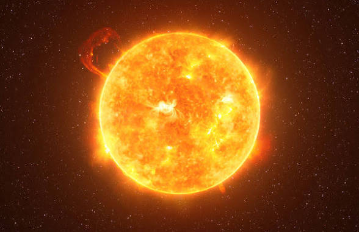
O Sol é a estrela que ilumina e aquece o nosso planeta. É o centro do Sistema Solar.
Curiosidades: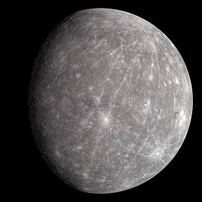
Mercúrio é o planeta mais próximo do Sol e o menor do Sistema Solar.
Curiosidades: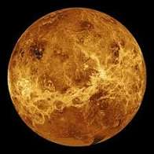
Vénus é conhecido pelas suas temperaturas extremamente elevadas.
Curiosidades: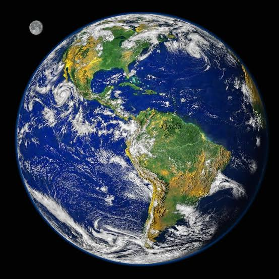
A Terra é o nosso lar e o único planeta onde sabemos que existe vida.
Curiosidades: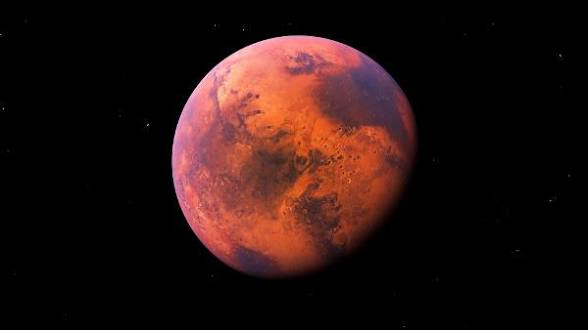
Marte é conhecido como o Planeta Vermelho devido à cor da sua superfície.
Curiosidades: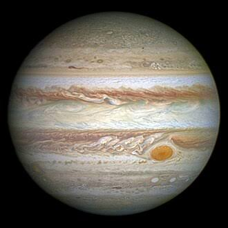
Júpiter é o maior planeta do Sistema Solar.
Curiosidades: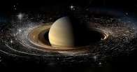
Saturno é famoso pelos seus impressionantes anéis.
Curiosidades: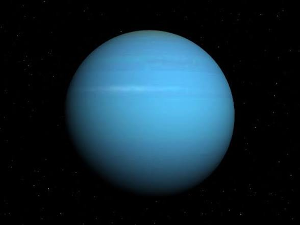
Urano é um gigante gelado que possui uma aparência azul-esverdeada.
Curiosidades: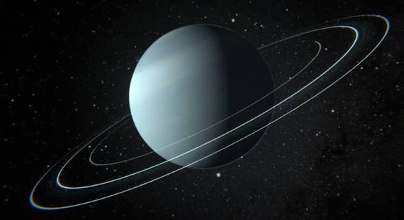
Neptuno é o planeta mais distante do Sol.
Curiosidades:O Universo esconde fenómenos extraordinários. Alguns já foram estudados, mas outros continuam a levantar grandes questões para os cientistas.
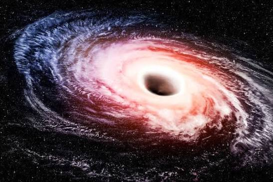
São regiões do espaço onde a gravidade é tão forte que nem a luz consegue escapar depois de atravessar o horizonte de eventos.
Curiosidades: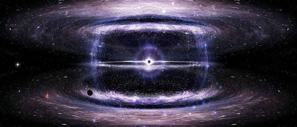
É uma forma de matéria que não emite nem reflete luz, mas cuja presença é percebida pelos seus efeitos gravitacionais.
Curiosidades: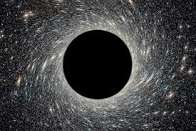
É o nome dado àquilo que parece estar a provocar a expansão acelerada do Universo.
Curiosidades: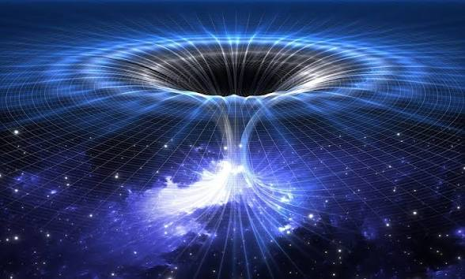
São estruturas hipotéticas que poderiam ligar regiões distantes do espaço-tempo.
Curiosidades: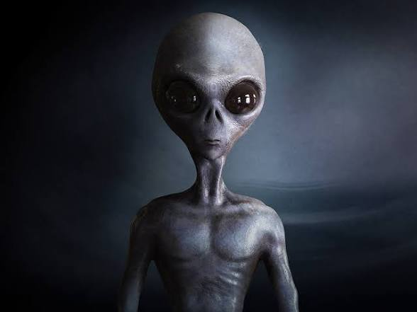
Será que existe vida fora da Terra? Esta é uma das maiores perguntas da ciência.
Curiosidades: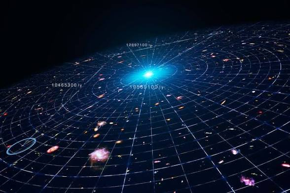
Como será o futuro do Universo? Os cientistas estudam diferentes possibilidades para o seu destino.
Curiosidades:O espaço é um livro sem última página. Cada descoberta revela novos segredos e mostra-nos que ainda temos muito para aprender.
Continua a explorar. Continua a questionar. O Universo espera por ti.